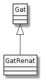
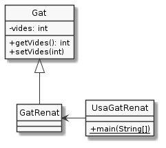

Herència¶
Si es pregunta pel concepte més representatiu de la programació orientada a objectes, amb pocs dubtes sortiria el d”herència.
L’herència és, com la Composició, una altra relació de dependència entre dues classes.
El concepte d’herència¶
Què tenen en comú en Renat, el Garfield, el Misifú, i en Tom (company del Jerry)? Doncs tots ells tenen quatre potes amb urpes i ullals, miolen, respiren, mengen sardines, empaiten ratolins… en definitiva: són gats.
I, què tenen en comú els gats, els gossos i els ratolins? Doncs que respiren, mengen… en definitiva: són animals. Però també són éssers vius, mamífers terrestres, de sang calenta, amb endoesquelet…
Cadascuna de les diferents categories (classes) a les que pertany en Renat, li ofereix un conjunt de característiques. En Renat hereta la necessitat de menjar per ser ésser viu, de respirar per ser animal, un esquelet intern per ser un animal amb endoesquelet, urpes i ullals per ser felí, etc.
Diem que Renat és un gat (is-a). I com que els gats són felins, en Renat és un felí. I com que els felins són animals, en Renat és un animal. És a dir, la relació is-a és transitiva:
Si A és subclasse de B, i B és subclasse de C, llavors A és subclasse de C
O amb un exemple més proper:
Si GatRenat és Gat, i Gat és Felí, llavors GatRenat és Felí
El següent diagrama mostra una jerarquia parcial dels animals.

Quan una classe A hereta d’una classe B, es diu que:
A és un B
A estén B
A especialitza a B
A concreta B
B generalitza a A
A és subclasse de B
B és superclasse d’A
Al diagrama veiem també casos en que una classe estén més d’una superclasse. Per exemple, els felins són a l’hora carnívors i mamífers. Això permet que un felí tingui a l’hora característiques de Carnívor (ex. menja carn), i a l’hora les de mamífer (ex. alleta les seves cries).
D’aquesta possibilitat de disposar de més d’una superclasse pertanyent a jerarquies diferents, se’n diu herència múltiple i es produeix quan:
A estén B i A estén C però B no estén C ni C estén B
Així, tenim que els gats són a l’hora mamífers i carnívors (per ser felins). El diagrama ens mostra que els gossos són també mamífers i carnívors, però no són felins. Això explica que, com els gats, mengin carn (per ser carnívors) i alletin les seves cries (per ser mamífers) però, a diferència dels gats, no tinguin urpes (per no ser felins). Això exemplifica el fet que cada classe dins la jerarquia afegeix característiques particulars a les seves subclasses.
L’herència en Java¶
Java, com a llenguatge orientat a objectes, implementa el concepte d’herència.

L’herència en Java s’especifica amb la paraula clau extends, de la
següent manera:
public class GatRenat extends Gat {
/* … */
}
Java no admet herència múltiple. Cada classe pot ser (i de fet és) només subclasse d’una única classe.
A dalt de tot de la jerarquia de classes es troba la classe Object (la
classe més general)
Per exemple, les següents dues declaracions són equivalents:
public class Gat {}
public class Gat extends Object {}
Object aporta una sèrie de característiques a totes les classes de
Java, per exemple, el mètode String toString(). Si consultes la
documentació de la classe Object
hi trobaràs un bon grapat de mètodes, molts d’ells força allunyats del que
hem vist fins ara a aquest curs. No pateixis. Quedat amb que hi són i on
pots trobar la seva descripció.
Però veiem en funcionament l’herència:

En primer lloc, veiem la classe Gat:
1 2 3 4 5 6 7 8 | public class Gat {
private int vides = 7;
public int getVides() { return vides; }
public void setVides(int vides) {
if (vides < 0) return;
this.vides = vides;
}
}
|
Ara la classe GatRenat aquest cop relacionant-la amb Gat:
1 | public class GatRenat extends Gat {}
|
Ha estat breu, oi?
Finalment, veiem com podem usar aquesta nova versió de GatRenat:
1 2 3 4 5 6 | public class UsaGatRenat {
public static void main(String[] args){
GatRenat renat = new GatRenat();
System.out.printf("El gat Renat té %d vides%n", renat.getVides());
}
}
|
En executar UsaGatRenat ens trobem amb l’habitual:
$ java UsaGatRenat
El gat Renat té 7 vides
Tot i sent habitual, és important que notem que getVides() no ha estat
definit a GatRenat sinó a Gat.


Una simplificació pels exemples¶
Com sabem, les tres classes de l’exemple anterior han de ser definides en tres fitxers separats que han de tenir com a nom el de la classe. Si bé aquesta és una manera força recomanable de fer, el cert és que no resulta massa pràctic per a presentar-te exemples. Per aquesta raó, et presento una funcionalitat de Java que fins ara no t’havia mostrat: podem posar més d’una classe a un mateix fitxer sempre i quant hi hagi com a molt una de pública.
Considera el següent codi que es troba en un únic fitxer anomenat
UsaGatRenat.java:
class Gat {
private int vides = 7;
public int getVides() { return vides; }
public void setVides(int vides) {
if (vides < 0) return;
this.vides = vides;
}
}
class GatRenat extends Gat {}
public class UsaGatRenat {
public static void main(String[] args){
GatRenat renat = new GatRenat();
System.out.printf("El gat Renat té %d vides%n", renat.getVides());
}
}
Com pots veure, el fitxer conté tres declaracions de variables, amb una sola de pública.
Considera la següent interacció:
$ ls
UsaGatRenat.java
$ javac UsaGatRenat.java
$ ls
Gat.class GatRenat.class UsaGatRenat.class UsaGatRenat.java
$ java UsaGatRenat
Abans de crear un Gat Renat
Neix un Gat
Neix un Gat Renat
Un cop creat un Gat Renat
Fixa’t que, malgrat només hi ha un .java, en compilar-lo, Java en
genera tres fitxers .class, un per cada classe definida a
UsaGatRenat.java.
També pots veure que el resultat de l’execució és el mateix que quan cada classe tenia el seu propi fitxer.
Donat que encara no coneixem massa bé quines repercusions té el fet que dues de les classes no siguin marcades com a públiques, de moment la versió d’un sol fitxer i la de tres ens resulten equivalents.
Interfície d’una classe¶
La interfície d’una classe està formada per tots els membres no privats que defineix la classe, més tots els membres no privats que hereta.
Considera el següent diagrama:

En UML, suposant que els membres són atributs, vindria a ser:
Veiem que la classe Felí defineix els membres mf1 i mf2. Aquests membres, en virtut de la relació d’herència, queden inclosos entre els membres de Gat i de Pantera. Així Gat disposa dels membres que defineix mg1 i mg2, més els heretats mf1 i mf2. És clar, Gat no disposa dels membres definits per altes subclasses de Felí, com ara el mp1 que defineix Pantera, tot i que comparteix amb aquesta els membres de Felí.
Finalment, Renat, en ser un Gat disposa dels membres mr1, mr2 (propis), més tots els de Gat (mg1, mg2, mf1 i mf2).
Com podem veure, Gat estén els membres de Felí amb els membres
propis. És a dir, Gat inclou tota la definició de Felí, i a més
a més, l’amplia amb nous continguts.
Concretem una mica. Suposem que disposem de les següents definicions de classe:
1 2 3 4 5 6 7 8 9 10 11 12 13 14 15 16 17 | class Felí {
/* … */
void menja(Menjar m) { System.out.println("Nyam Nyam " + m); }
/* … */
}
class Gat extends Felí {
void miola() { System.out.println("MEEEEEEU"); }
}
class UsaGat {
public static void main(String[] args) {
Gat gat = new Gat();
gat.miola();
gat.menja(new Menjar());
}
}
|
En aquest exemple podem observar com, des de la classe UsaGat podem
accedir a un membre de Gat (el mètode menja()) que no ha estat
definit a Gat sinó a la seva superclasse Felí. Fixem-nos en que
l’accés a un mètode heretat de Gat des de UsaGat és idèntic a
l’accés a un mètode definit per Gat.
Comportaments específics¶
El fet que una subclasse hereti tots els membres no privats de la superclasse no vol dir que la subclasse s’hagi de comportar exactament igual que la superclasse, a l’hora d’oferir els serveis que hereta.
Considerem el cas del nostre amic Renat. En Renat és un gat, sí, però un
de molt especial. Només menja després de netejar-se les urpes. Suposem
que Renat hereta els mètodes void menja(Menjar) i void
netejaUrpes().
El codi tindria el següent aspecte:
1 2 3 4 5 6 7 8 9 10 11 12 13 14 15 16 17 18 | class Gat {
void menja(Menjar menjar) { System.out.println("Gat menja " + menjar); }
void miola() { System.out.println("Gat miola"); }
void netejaUrpes() { System.out.println("Gat netejaUrpes"); }
/* … */
}
class GatRenat extends Gat {
@Override
void miola() { System.out.println("GatRenat miola"); }
@Override
void menja(Menjar menjar) {
netejaUrpes();
super.menja(menjar);
}
/* … */
}
|
Com que GatRenat no fa res diferent amb el mètode netejaUrpes() del que
fa Gat, no cal que el declari. Quan es cridi el mètode netejaUrpes() a
una instància de GatRenat, directament s’executarà el mètode declarat a la
classe Gat.
El Renat miola de manera diferent a un gat general. Per aquesta raó,
GatRenat torna a definir el mètode miola(). Aquesta redefinició
es coneix també com overriding.
Si es realitza la crida al mètode miola() des d’una instància de
GatRenat, s’executarà el mètode d’aquesta classe i no de la seva
superclasse.
El mètode menja() de GatRenat també està redefinit, però en aquest
cas presenta una particularitat diferent de miola(). Un cop s’ha
netejat les urpes, en Renat es posa a menjar com ho faria un gat
qualsevol. De fet, la única particularitat és que el Renat, abans de
menjar, sempre es renta les urpes.
Analitzem el codi de GatRenat.menja(Menjar). La primera instrucció és
una crida al mètode netejaUrpes(). Aquest mètode no apareix definit a
la classe GatRenat sinó que és heretat de Gat. Cap problema. Ja
sabem que és un mètode heretat i, per tant, GatRenat el pot considerar
com seu.
Per GatRenat, el mètode netejaUrpes() és tan seu que fins i tot el
podria cridar com this.netejaUrpes().
La segona instrucció és més críptica. El que perseguim és que executi el
codi del mètode menja(Menjar) de la classe Gat però si fem
simplement menja(menjar) estaríem cridant al mateix mètode menja()
que estem definit a GatRenat de manera recursiva que acabaria d’una
manera poc dessitjable: amb la pila d’execució plena i la panxa del gat
buida!
El problema és que el mètode menja(Menjar) heretat pel GatRenat, ha
quedat ocultat per la nova definició del mètode a dins de GatRenat.
Aquest és un fenomen que ja ens resulta familiar, oi? Recordem la situació típica:
class Gat {
private int vides = 7;
public void setVides(int vides) {
if (vides >= 0) {
this.vides = vides;
}
}
/* … */
}
En aquesta situació, el paràmetre vides oculta l’atribut vides.
Per poder-nos saltar l’ocultació, fèiem servir this.vides de manera
que Java sapigués que ens referíem a vides de la instància i no a
vides paràmetre.
Ara el que se’ns està ocultant, però, és un mètode que va ser declarat a
la superclasse. Intentar fer this.menja(menjar) tindrà exactament el
mateix resultat que si no fem servir this doncs menja() pertany a
la instància i no al mètode.
Per indicar a Java que volem referir-nos a un mètode definit per la
superclasse, en comptes de per la subclasse, el llenguatge ens ofereix la
referència super, que al igual que this ens arriba per defecte, i
que apunta a la part de la instància que és heretada.
D’aquesta manera, en trobar-se super.menja(menjar), Java sap que ens
referim a la definició de Gat i no a la de GatRenat i, finalment,
el nostre amic pot acabar de menjar amb les seves urpes ben netes.
Herència i constructors¶
T’has plantejat què passa amb els constructors en el cas de l’herència?
Considera aquest codi:
1 2 3 4 5 6 7 8 9 10 11 12 13 14 15 16 17 18 19 | class Gat {
public Gat() {
System.out.println("Neix un Gat");
}
}
class GatRenat extends Gat {
public GatRenat() {
System.out.println("Neix un Gat Renat");
}
}
public class UsaGatRenat {
public static void main(String[] args){
System.out.println("Abans de crear un Gat Renat");
GatRenat renat = new GatRenat();
System.out.println("Un cop creat un Gat Renat");
}
}
|
La seva execució seria:
$ java UsaGatRenat
Abans de crear un Gat Renat
Neix un Gat
Neix un Gat Renat
Un cop creat un Gat Renat
Com pots veure, a la línia 16 creem una instància de GatRenat tot
cridant el constructor de GatRenat. La sortida, però, ens mostra que
primer passa pel constructor de Gat i després pel de GatRenat.
Com és possible si no hem fet cap new Gat() enlloc?
Ja imaginaràs que Java deu d’estar fent la crida pel seu compte de manera amagada com tantes altres coses.
Fem-ho explícit. El que Java ens està col·locant és el següent:
1 2 3 4 5 6 | class GatRenat extends Gat {
public GatRenat() {
super();
System.out.println("Neix un Gat Renat");
}
}
|
És molt similar al this(), però en comptes de cridar un constructor
de la mateixa classe, ho fa a un de la superclasse.
Ara que ja tenim descobert els moviments amagats de Java, entendrem que les següents dues definicions són equivalents:
La primera, amb tot implícit:
class Gat {}
La segona, amb tot explícit:
class Gat extends Object {
public Gat() {
super();
}
}
De la mateixa manera que this(), la crida super() només pot
aparèixer com a primera línia d’un constructor i, en cas que no hi sigui,
Java l’afegirà per defecte.
Això ens porta a una situació que pot esdevenir problemàtica. Considera
la següent definició de Gat:
1 2 3 4 5 6 7 | class Gat {
private int vides;
public Gat(int vides) {
this.vides = vides;
}
public int getVides() { return vides; }
}
|
És a dir, Gat no té constructor per defecte.
Sabem que en aquesta situació no podem fer una instància de Gat així:
Gat gat = new Gat(); // no troba el constructor per defecte
Què passarà amb la subclasse?
1 | class GatRenat extends Gat {}
|
Un codi aparentment tan innocent com l’anterior, de sobte no compila!
És clar, Java està posant-nos la crida al constructor per defecte de la superclasse:
1 2 3 4 5 | class GatRenat extends Gat {
GatRenat() {
super();
}
}
|
D’aquesta manera, super() es tradueix pel constructor Gat() que
no està disponible!
Quan una classe no ofereix constructor per defecte, les seves subclasses estan forçades a definir explícitament constructor.
Per exemple, una manera de resoldre-ho podria ser:
1 2 3 4 5 | class GatRenat extends Gat {
public GatRenat(int vides) {
super(vides);
}
}
|
O mantenint el constructor per defecte a GatRenat:
1 2 3 4 5 | class GatRenat extends Gat {
public GatRenat() {
super(7);
}
}
|
Polimorfisme¶
Considera el següent codi:
1 2 3 4 5 6 7 8 9 10 11 12 13 14 15 16 17 18 19 20 21 22 23 24 25 26 27 28 29 30 31 32 33 34 35 36 37 38 39 40 41 42 | class Gat {
void menja(Menjar menjar) { System.out.println("Gat menja " + menjar); }
void miola() { System.out.println("Gat miola"); }
void netejaUrpes() { System.out.println("Gat netejaUrpes"); }
/* … */
}
class GatRenat extends Gat {
@Override
void miola() { System.out.println("GatRenat miola"); }
@Override
void menja(Menjar menjar) {
netejaUrpes();
super.menja(menjar);
}
void fesDeRenat() { System.out.println("GatRenat fa de Renat"); }
/* … */
}
public class UsaGats {
/* prepara un menjar pel gat, li ho fa menjar i finalment fa que mioli */
private static void alimentaGat(Gat gat) {
Menjar menjar = new Menjar("sardines");
gat.menja(menjar);
gat.miola();
}
public static void main(String[] args){
Gat gat = new Gat();
GatRenat renatI = new GatRenat();
Gat renatII = new GatRenat();
System.out.printf("Alimentant el gat%n");
alimentaGat(gat);
System.out.printf("%n%nAlimentant el gat Renat I%n");
alimentaGat(renatI);
System.out.printf("%n%nAlimentant el gat Renat II%n");
alimentaGat(renatII);
}
}
|
Analitzant aquest codi ens trobem amb quelcom molt peculiar. Fixa’t en la línia 33.
33 | Gat renatII = new GatRenat();
|
renatII és declarat com una referència a instàncies de tipus Gat
però el que se li assigna és una instancia de tipus GatRenat!
Aquest codi compila i s’executa. En fer-ho, el resultat és:
$ java UsaGats
Alimentant el gat
Gat menja sardines
Gat miola
Alimentant el gat Renat I
Gat netejaUrpes
Gat menja sardines
GatRenat miola
Alimentant el gat Renat II
Gat netejaUrpes
Gat menja sardines
GatRenat miola
Per primer cop en aquest curs Java sembla acceptar que una referència d’un tipus accepti una instància d’un altre tipus.
La pregunta és, realment es tracta d’un altre tipus? I la resposta és
no ben bé. Per la definició de GatRenat com a subclasse de Gat
el que estem dient és que un gat Renat és un gat. Això Java s’ho pren
tant seriosament que accepta instàncies de GatRenat a tot arreu
que accepti instàncies de Gat.
A aquesta possibilitat de que una variable pugui fer referència a instàncies del seu tipus o de les subclasses d’aquest li direm polimorfisme.
Si ens fixem més en el codi, veurem que el procediment alimentaGat()
accepta un paràmetre de tipus Gat i està prou content quan se li passa
renatI i renatII que fan referència a instàncies de GatRenat
tant si ha estat declarat com a GatRenat com si ho ha estat com a
Gat.
De fixar-nos encara més, trobarem que alimentaGat(), tot i només saber
de gats, està fent que finalment s’executi els mètodes miola() i
menja() corresponents a GatRenat quan el que rep és una instància
de GatRenat. Fixa’t que a la sortida tots dos es netegen les urpes
abans de menjar i miolen com a GatRenat.
Tots els gats Renat són gats però no tots els gats són gats Renat.¶
Hem vist que pel polimorfisme, una variable pot fer referència a una instància de la seva classe o de qualsevol de les subclasses. També hem vist que, en cridar un mètode sobreescrit de la instància, acaba sent executat el corresponent a la classe real de la instància i no a la superclasse.
Què passaria si intentem cridar un mètode vàlid per un GatRenat des
d’una referència de tipus Gat?
Considera el següent fragment de codi:
1 2 3 4 5 | GatRenat renat = new GatRenat();
renat.fesDeRenat(); // cap problema
Gat gat = new GatRenat();
gat.fesDeRenat(); // no compila!
|
El fragment de codi anterior no compila. A la línia 5, Java intenta
trobar el mètode fesDeRenat() a la definició de Gat però no la
troba. De fet, el problema el detecta el compilador.
Donat que sabem que gat està fent referència realment a un
GatRenat, podríem saltar-nos aquesta protecció del compilador de la
següent manera:
5 | ((GatRenat)gat).fesDeRenat(); // ara sí compila i s'executa bé
|
En prefixant la referència amb (GatRenat) estem avisant al compilador
de Java que tracti la referència com a GatRenat i no com a Gat. El
compilador passa a cercar el mètode a la definició de GatRenat i, com
la troba, compila sense més queixa.
Però… i si realment no fos un GatRenat sinó un Gat i li féssim
creure a Java que és el primer?
1 2 | Gat gat = new Gat();
((GatRenat)gat).fesDeRenat(); // sí compila!
|
Doncs resulta que el compilador de Java s’ho empassa i genera el
.class. Quan ho intentem executar, però, la mentida surt a la llum amb
un missatge similar a:
$ java UsaGats
Exception in thread "main" java.lang.ClassCastException: class Gat cannot be cast to class GatRenat (Gat and GatRenat are in unnamed module of loader 'app')
at UsaGats.main(UsaGats.java:55)
És clar, un gat qualsevol per molt que ens hi posem, no pot fer de gat Renat.
El següent dibuix intenta mostrar-ho gràficament.

A la imatge veiem com un suport (variable) per cucurutxos de tipus
(classe) A, pot subjectar (referenciar) cucurutxos (instàncies) de
tipus A. Aquest mateix suport, és capaç de subjectar cucurutxos que
estenen el tipus A. En canvi, amb el suport pels cucurutxos de tipus
B, els de tipus A ens caurien a terra!
Si et costa l’abstracció, substitueix A per Gat i B per
GatRenat
Classes abstractes¶
A una jerarquia de classes, es pressuposa que la superclasse és més abstracta que la subclasse. Sovint recollim els elements comuns d’unes classes i els agrupem en una superclasse.
Considera el següent exemple:
1 2 3 4 5 6 7 8 9 10 11 12 13 14 15 16 | class Animal {
/* … */
public void menja(Menjar menjar){ /* … */ }
public void fesSoroll(){ /* … */ }
}
class Gat extends Animal {
/* … */
@Override public void fesSoroll() { /* … */ }
public void miola() { /* … */ }
}
class Gos extends Animal {
/* … */
@Override public void fesSoroll(){ /* … */ }
public void borda(){ /* … */ }
}
|
La classe Animal agrupa els elements comuns dels gats i dels gossos. A
l’exemple, tots els animals, tant gats com gossos, ens permeten
demanar-los que es posin drets i que mengin un determinat menjar.
Fixa’t que d’aquesta manera ens estalviem de definir tots aquests mètodes a les diferents
subclasses d’animal. Únicament ens caldrà definir els elements particulars. Per exemple,
la classe Gat podria definir el mètode fesSoroll() de la següent manera:
public void fesSoroll() {
miola();
}
A l’exemple dels animals, té sentit instanciar un Gat o un Gos. En podem fer coses amb ells com, demanar-los que mengin, que miolin, bordin (o més general, que facin soroll).
Ens podem imaginar quin serà el soroll d’un gat o d’un gos, però, com serà
el soroll d’una instància de Animal?
Quan la raó principal de crear una classe és per actuar com a agrupador d’elements comuns de les seves subclasses, però no es pretén que existeixin instàncies d’aquesta classe, aquesta classe li diem classe abstracta.
1 2 3 4 5 6 7 8 9 10 11 12 13 14 15 16 | abstract class Animal {
/* … */
public void menja(Menjar menjar){ /* … */ }
public abstract void fesSoroll();
}
class Gat extends Animal {
/* … */
@Override public void fesSoroll() { /* … */ }
public void miola() { /* … */ }
}
class Gos extends Animal {
/* … */
@Override public void fesSoroll(){ /* … */ }
public void borda(){ /* … */ }
}
|
Al codi anterior veiem que n’hi ha prou amb afegir el modificador
abstract davant la definició de la classe i del mètode abstracte per
declarar l’abstracció.
El mètode abstracte fesSoroll(), a banda del modificador abstract,
presenta la particularitat que no té cos del mètode. És a dir, després de
definir la signatura, no apareix l’habitual bloc d’instruccions que
defineixen què ha de fer el mòdul. La signatura acaba en un senzill punt i
coma.
Hi poden haver tants mètodes abstractes com ens calguin. El que és
important és que totes les subclasses de Animal hauran de concretar
el cos dels mètodes abstractes que hereten o bé hauran de ser també
classes abstractes.
La manera d’indicar que una classe és subclasse d’una classe abstracta no
es distingeix de si la superclasse hagués estat concreta. És a dir,
s’indica amb l’habitual extends .
Una subclasse d’una classe abstracta pot ser també abstracta. Simplement cal no implementar algun dels mètodes abstractes de la superclasse o afegirn-ne de nous.
D’una classe abstracta no podem crear instàncies. La següent línia de codi no compilarà:
1 2 | Animal animal = new Animal(); // ERROR: Animal és abstracte i no
// pot ser instanciat
|
El que sí podem fer és declarar referències a animals i inicialitzar-les amb instàncies d’alguna de les seves subclasses, gràcies al polimorfisme.
Perill d’abús d’herència¶
És típic quan descobreixes l’herència (com d’altres tècniques/utilitats/…) que la vulguis fer servir per tot arreu.
Abans que ens emocionem amb l’herència, cal que tinguem clar què té sentit i què no.
Per exemple, imagina’t que has d’implementar la classe TargetaMetro
que té un cert nombre de viatges que es van gastant a mida que es fa
servir la targeta. En crear la targeta, queda pre-carregada amb un nombre
de viatges. El nombre de viatges mai no ha de ser negatiu i s’ha de poder
anar eliminant d’un en un per cada ús. Un cop exhaurits tots els viatges,
la targeta no és usable a menys que es torni a recarregar.
Potser se’ns podria ocórrer la brillant idea de comparar els viatges amb
les vides d’un GatRenat i així estalviar-nos un munt de codi:
public class TargetaMetro extends GatRenat {
public TargetaMetro(int viatgesInicials) {
super(viatgesInicials);
}
}
Ara, l’ús de la targeta (la pèrdua d’un viatge) la podem executar amb el
mètode mor() que treu una vida/viatge fins que ja no en queden més.
Saber si encara queden viatges ho podem resoldre amb el mètode
estaViu() i la recàrrega amb resuscita().`
És cert que ens estalviem tot de codificació, però… tenim una targeta de viatges que miola.
Per poder saber quines herències tenen sentit i quines no, hem de fer ús del principi de substitució de Liskov:
una herència entre dues classes està correctament definida si sempre es pot fer servir una instància de la subclasse allà on el programa espera una instància de la superclasse.
Un exemple típic d’herència incorrecta és entre Quadrat i Rectangle (o també Cercle i Oval). Suposa que tens les següents classes:
1 2 3 4 5 6 7 8 9 10 11 12 13 14 15 16 17 18 19 20 21 22 23 | class Rectangle {
private int base, altura;
public Rectangle(int base, int altura) {
this.base = base; this.altura = altura;
}
public int getBase() { return base; }
public int getAltura() { return altura; }
public void setBase(int base) { this.base=base; }
public void setAltura(int altura) { this.alaura=altura; }
/* … */
}
class Quadrat extends Rectangle {
public Quadrat(int costat) {
super(costat, costat);
}
public int getCostat() { getBase(); }
public void setCostat(int costat) {
setBase(costat);
setAltura(costat);
}
/* … */
}
|
Malgrat que, en principi, una herència com aquesta pot semblar una bona idea (especialment si els «…» inclouen molt de codi, en realitat amaga una desagradable sorpresa. Considera el següent codi:
1 2 3 4 5 6 7 8 9 10 | class UsaRectangles {
public static void main(String[] args) {
Rectangle[] rectangles = new Rectangle[2];
rectangles[0] = new Rectangle(3, 5);
rectangles[1] = new Quadrat(4);
for (Rectangle r: rectangles) {
r.setBase(r.getBase() - 1); // encongeix la base
}
}
}
|
En UsaRectangles aconseguim que la instància de Quadrat
referenciada per rectangles[1] acabi tenint un quadrat de costat 3
i 4!. És a dir, hem aconseguit petar la coherència de la classe i
tot fent-la servir «legalment».
El problema de l’exemple és que un quadrat no es pot considerar un rectangle en tots els contexts on s’espera que es comporti correctament un rectangle (ex. quan encongim un dels seus costats)
En resum, abans de crear una subclasse B d’una classe A,
assegurem-nos que podem dir que tot B és un A. No n’hi ha prou
amb que algun B és un A, o tot B s”assembla a A, o és
pràcticament un A excepte per algun detall, etc.
Una altra cosa que hem de tenir sempre present en llenguatges com Java, és que l’herència és d’un sol tret en el sentit que només podem estendre una classe. Per sort, disposem d’altres mecanismes que ens permetran salvar aquesta aparent limitació. No et perdis el següent episodi…